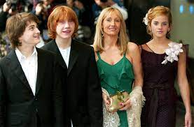

| Joanne Kathleen Rowling | John Ronald Reuel Tolkien | Andrzej Sapkowski |
|---|
A Bristol melletti Yate-ben született 1965. július 31-én.
Tanulmányait 1983-ban a kiváló és világhírű Exeter Egyetemen (Dél-Anglia) folytatta, ahol franciát és klasszika-filológiát hallgatott. Eközben egy évig Párizsban is tanult. Szülei meg voltak győződve, hogy csodálatos karriert fog befutni kétnyelvű titkárnőként. Tanulmányai befejezése után Londonba ment, az Amnesty Internationalnél helyezkedett el mint titkárnő, ahol Afrika francia nyelvű részének emberi jogi problémáival foglalkozott. A legjobban azt szerette az irodai munkában, hogy amikor nem figyelt rá senki, történeteket gépelhetett a számítógépébe.
Fiatalon fordult érdeklődése a nyelvek irányába. Az olyan antik vagy ősi eredetű nyelvek, mint a latin, az ógörög, a walesi, a gót, az óskandináv nyelvek, az óangol különféle változatai, és a finn, különösen elbűvölték. Már ebben a korban, illetve oxfordi egyetemi évei alatt, megkezdte mesterséges nyelveinek kidolgozását (1915-re már igen előrehaladt a tündenyelvek kidolgozásában)
A Gyűrűk Ura a hatvanas években hatalmas sikert aratott és azóta is rendkívüli népszerűségnek örvend. A mű, ahogy a hasonló szintetikus művek és mítoszregények általában, elképzelhetetlenül sok (vélelmezett vagy bevallott) irodalmi és mitológiai vonatkozást vagy átvételt tartalmaz, elsősorban az óskandináv és óangol mítosz- és legendairodalomból, de kortárs irodalmi művek (főleg tündérmesék) is hatottak az íróra, azonkívül – bár szándékosan jól eldolgozott ecsetvonásokkal – tagadhatatlanul megjelenik benne a keresztény (katolikus) vallás szemléletmódja is. A mitológiai elemek feltárása, azok összefüggései a Gyűrűk Ura (és a többi Tolkien-mű) körüli metairodalom komoly, valószínűleg legterjedelmesebb szeletét alkotja.
| 1937 | 1954 | 1955 |
|---|---|---|
| A hobbit | A Gyűrű szövetsége, A két torony | A király visszatér |
Łódźban nőtt fel, a város egyetemén tanult közgazdaságtant. Irodalmi pályájának kezdete előtt kereskedőként dolgozott, majd sci-fi művek fordítójaként tevékenykedett. Első művét, a később világsikerré váló Vaják-ot (lengyelül Wiedźmin, angolul The Witcher) 1986-ban, saját elmondása szerint fia unszolására írta meg, aki akkoriban a Fantastyka magazin lelkes olvasója volt.[2] Sapkowski nevezett is művével a magazin versenyére, ahol a 3. helyet érte el vele.[3] A magazin megjelentette az írást, amely óriási siker lett, és a legkeresettebb lengyel szerzők közé emelte Sapkowskit